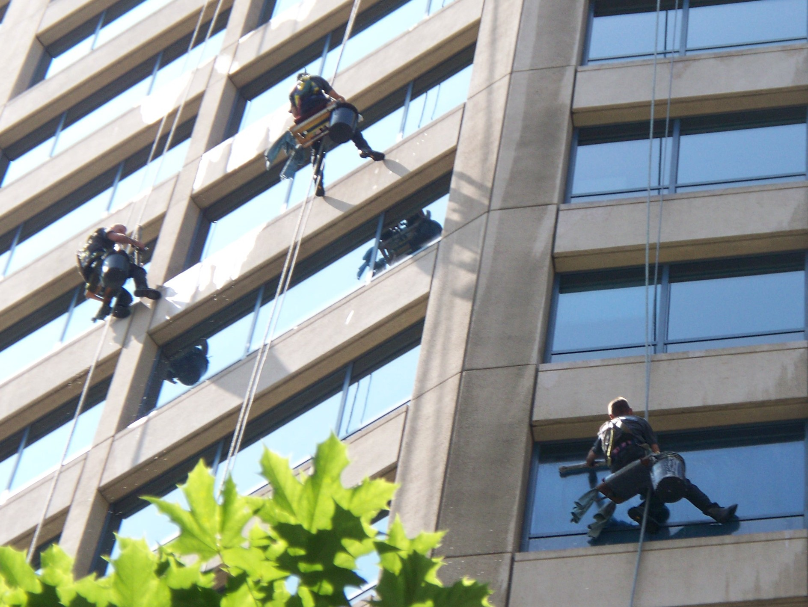

For over 40 years, LWC Services has provided cleaning and maintenance services throughout Pennsylvania, New Jersey, Delaware, and Maryland. We're a clear choice:
We keep the windows of Philadelphia's leading skyscrapers, hospitals, universities, hotels, entertainment and government venues looking their best. We are the leaders in high-rise window cleaning in the Delaware Valley with a strong emphasis on quality, safety and dependability from carefully trained and supervised employees. We are experts in glass restoration to bring even the dirtiest, most neglected windows to a streak-free shine. And we will work with you to develop a program to help your windows look great all year round.
We offer a wide range of building services to create professional and clean environments for employees and clients alike. Our services include high dusting, pressure washing, chandelier cleaning, venetian blind cleaning, awning cleaning, re-lamping, metal clad exterior work, and Dryvit/EIFS support.

Cleaning and maintenance of industrial equipment and work areas is crucial to safety and extending the lifetime of your investments. We'll work with you to establish regular cleaning routines to be up to safety standards. The list of areas we service include: